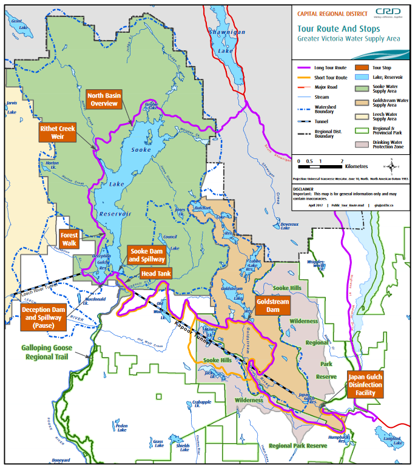

A contemporary city is a node of energy and material consumption, but it is not sustainable in the sense that the ecological footprint (in terms of natural capital) needed to support the urban population is several hundreds time greater than the city's physical footprint (Rees, 1996). Cities pull on ecological resources and dispose of waste far outside the physical limits of the city.
It has been suggested that urban sustainability will require no less than the reconstruction of our cities, and that sustainable urban (re)design will need to consider the “resource flows for neighborhood developments or entire cities,” or in other words, “to design the urban metabolism of sustainable cities” (Kennedy, 2011). This kind of thinking requires planners and engineers to consider how retrofits to physical infrastructure can be ecologically regenerative i.e. by integrating water-based, vegetative, and non-living landscapes in such a way as to provide urban residents with the ecosystem services they need, while also improving a city’s ecological integrity and sustainability (Liu, 2017).
In recent years, there has been focus on sanitation and waste treatment as opportunities to recover resources from sanitation systems (Ddiba, 2016). One example is ecological sanitation, the principle of closing the cycle between sanitation and agriculture by recycling the nutrients in urine and feces into compost (Langergraber, 2005). The use of a dry toilet based on ecological sanitation principles has the following benefits: 1) reducing water consumption, 2) reducing downstream expenses and operational inefficiencies associated with treatment and disposal of sewerage, and 3) recycling nutrients into compost to improve soil quality.
Composting Toilets at the University of Victoria
While it is unlikely that all retrofits to urban infrastructure will result in cost savings as well as improved resource efficiency, there are some “low-hanging fruit”-type projects that are sustainable from both an economic and ecological perspective; these should be implemented as soon as possible. The University of Victoria has a campus sustainability fund available to finance such projects (Campus Planning, 2016); would retrofitting composting toilets be eligible for such financing?
In one of the civil engineering graduate buildings, E Hut, there are six flush toilets.
Assumptions:
· Number of people in the building per day: 30
· Number of flushes per person per day: 5 (RWPC)
· Volume of water used per flush: 1.6 gallon (RWPC)
· Number of working days per year: 260 days
· 264 gallons per m3
· Cost of water: $2.212 per m3
Estimated annual water savings:

To be under the five-year recommended payback period, the retrofit investment would have to be less than five times the annual water savings, or $2,614.18. This comes out to $435.70 per toilet retrofitted. Many higher-tech commercial composting toilets, like the Envirolet toilet manufactured in Canada, cost several thousand dollars per unit to install.
Unfortunately, the short-term economic benefits for retrofitting are not sufficient, perhaps rendering this proposal idea ineligible. But is there a moral argument to be made?
References
Campus Planning & Sustainability. (2016). Energy and water savings projects application. University of Victoria. Retrieved from https://www.uvic.ca/sustainability/involved/sustainability-fund/application/index.php
Ddiba, D. (2016). Estimating the potential for resource recovery from productive sanitation in urban areas. https://doi.org/10.13140/RG.2.1.4987.2881
Envirolet Eco Sanitation Systems. Retrieved from https://www.envirolet.ca/
Kennedy, C., Pincetl, S., & Bunje, P. (2011, August). The study of urban metabolism and its applications to urban planning and design. Environmental Pollution. https://doi.org/10.1016/j.envpol.2010.10.022
Langergraber, G., & Muellegger, E. (2005). Ecological Sanitation - A way to solve global sanitation problems? Environment International. Elsevier Ltd. https://doi.org/10.1016/j.envint.2004.08.006
Liu, X., Zhang, X., Zhao, D., Liu, H., & Zhou, C. (2017). Urban ecological infrastructure: an integrated network for ecosystem services and sustainable urban systems. Journal of Cleaner Production, 163, S12–S18. https://doi.org/10.1016/J.JCLEPRO.2016.02.079
Rees, W., & Wackernagel, M. (1996). URBAN ECOLOGICAL FOOTPRINTS: WHY CITIES CANNOT BE SUSTAINABLE AND WHY THEY, 9255(96), 223–248.
Regional Water Providers Consortium. Toilet water use. Retrieved from https://www.conserveh2o.org/toilet-water-use
Population growth & climate change
The primary supply of Greater Victoria’s water is Sooke Lake. The Sooke Lake is recharged by rainfall, and the current turbidity of the lake is so low that the current water treatment system is very simple: UV disinfection followed by chlorination. However, CRD is trying to mitigate the risks of insufficient water supply caused by increased demand through population growth and/or decreased supply caused by climate change. CRD has a 30+ year plan to bring another watershed and reservoir online to manage this uncertainty.
Forest management
Because the water supply is unfiltered, forest fires pose a risk by introducing ash in the lake, which can increase turbidity. This has an impact on both the aesthetic and public health characteristics of the water. The reservoir’s forestry management is thus primarily concerned with minimizing fire risk. The primary strategy is managing the forest stock such that the structure simulates an old growth forest characteristic to this region: Douglas firs transitioning to hemlock and big-leaf maple. We also learned that we should hate the very flammable and invasive Scotch broom!
 Map of watershed tour.